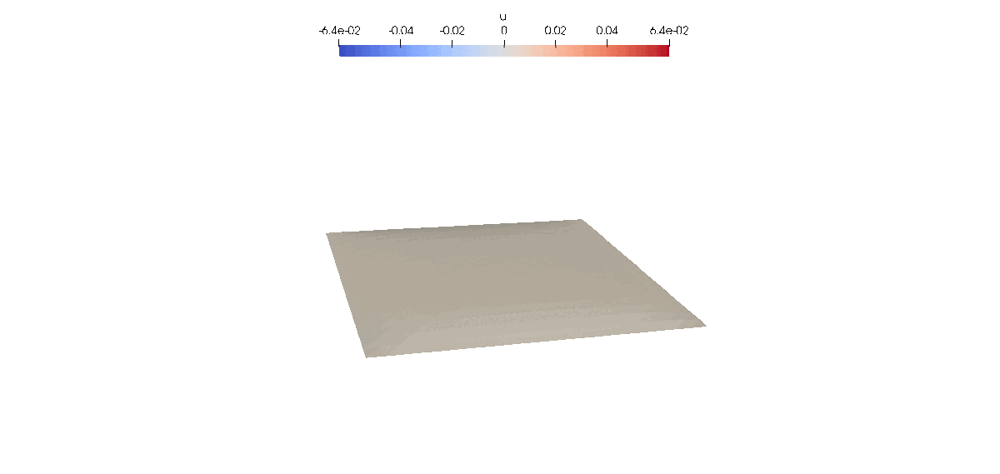

Introduction
In this tutorial we will learn how to use Gridap for approximating transient PDEs by using time marching schemes (method of lines). We consider the heat equation, a.k.a. the transient Poisson equation.
Problem statement
We solve the heat equation in a 2-dimensional domain $\Omega$, the unit square, with Homogeneous Dirichlet boundaries on the whole boundary $\partial \Omega$. We consider a time-dependent conductivity $\kappa(t)=1.0 + 0.95\sin(2\pi t)$, a time-dependent volumetric forcing term $f(t) = \sin(\pi t)$ and a constant Homogeneous boundary condition $g = 0.0$. The initial solution is $u(x,0) = u_0 = 0$. With these definitions, the strong form of the problem reads:
\[\left\lbrace \begin{aligned} \frac{\partial u(t)}{\partial t} -\kappa(t)\Delta u(t) = f(t) \ &\text{ in } \ \Omega,\\ u(t) = 0 \ &\text{ on }\ \Gamma_{\rm D},\\ u(0) = 0 \ &\text{ in }\ \Omega\\ \end{aligned} \right.\]
The weak form of the problem reads: find $u(t)\in U_g(t)$ such that
\[m(t,u,v) + a(t,u,v) = b(t,v)\quad \forall v\in \ V\]
Note that $U_t(t)$ is a transient FE space, in the sense that Dirichlet boundary value of functions in $U_t$ can change in time (even though this is not the case in this tutorial). The definition of $m(u,v)$, $a(u,v)$ and $b(v)$ is as follows:
\[\begin{aligned} m(t,u,v) = \int_\Omega v\frac{\partial u}{\partial t} d\Omega, \\ a(t,u,v) = \int_\Omega \kappa(t) \nabla v\cdot \nabla u d\Omega, \\ b(t,v) = \int_\Omega v\ f(t) d\Omega \end{aligned}\]
Discrete model and Triangulation
As for Poisson, we start by loading the libaries and defining our DiscreteModel the Triangulation.
using Gridap
using DrWatson
model = CartesianDiscreteModel((0,1,0,1),(20,20))
Ω = Triangulation(model)
dΩ = Measure(Ω,2)FE spaces
The space of test functions is constant in time and is defined like for the steady problem:
reffe = ReferenceFE(lagrangian,Float64,1)
V = TestFESpace(model,reffe,dirichlet_tags="boundary")The trial space is now a TransientTrialFESpace, which is constructed from a TestFESpace and a function (or vector of functions) for the Dirichlet boundary condition/s. In that case, the boundary condition function is a time-independent constant, but it could also be a time-dependent field depending on the coordinates $x$ and time $t$.
g(x,t::Real) = 0.0
g(t::Real) = x -> g(x,t)
U = TransientTrialFESpace(V,g)Weak form
The weak form of the problem follows the same structure as other Gridap tutorials, where we define the bilinear and linear forms to define the FEOperator. In this case we need to deal with time-dependent quantities and with the presence of time derivatives. The former is handled by passing the time, $t$, as an additional argument to the form, i.e. $a(t,u,v)$. The latter is defined using the time derivative operator ∂t.
The most general way of constructing a transient FE operator is by using the TransientFEOperator function, which receives a residual, a jacobian with respect to the unknown and a jacobian with respect to the time derivative.
κ(t) = 1.0 + 0.95*sin(2π*t)
f(t) = sin(π*t)
res(t,u,v) = ∫( ∂t(u)*v + κ(t)*(∇(u)⋅∇(v)) - f(t)*v )dΩ
jac(t,u,du,v) = ∫( κ(t)*(∇(du)⋅∇(v)) )dΩ
jac_t(t,u,duₜ,v) = ∫( duₜ*v )dΩ
op_NL = TransientFEOperator(res,jac,jac_t,U,V)We can also take advantage of automatic differentiation techniques to compute both Jacobians and use the TransientFEOperator function sending just the residual.
op_AD = TransientFEOperator(res,U,V)Alternatively, we can exploit the fact that the problem is linear and use the transient Linear FE operator signature TransientLinearFEOperator. In that case, we send a form for the mass contribution, $m$, a form for the stiffness contribution, $a$, and the forcing term, $b$.
m(t,u,v) = ∫( u*v )dΩ
a(t,u,v) = ∫( κ(t)*(∇(u)⋅∇(v)) )dΩ
b(t,v) = ∫( f(t)*v )dΩ
op_Af = TransientLinearFEOperator((a,m),b,U,V)Alternative FE operator definitions
For time-dependent problems with constant coefficients, which is not the case of this tutorial, one could use the kwarg constant_forms = (true, true) to indicate that the matrix contributions ($m$ and $a$) are time-independent. That is:
m₀(u,v) = ∫( u*v )dΩ
a₀(u,v) = ∫( κ(0.0)*(∇(u)⋅∇(v)) )dΩ
op_CM = TransientLinearFEOperator((a, m), b, U, V, constant_forms=(true, true))Transient solver
Once we have the FE operator defined, we proceed with the definition of the transient solver. First, we define a linear solver to be used at each time step. Here we use the LUSolver, but other choices are possible.
linear_solver = LUSolver()Then, we define the ODE solver. That is, the scheme that will be used for the time integration. In this tutorial we use the ThetaMethod with $\theta = 0.5$, resulting in a 2nd order scheme. The ThetaMethod function receives the linear solver, the time step size $\Delta t$ (constant) and the value of $\theta$.
Δt = 0.05
θ = 0.5
ode_solver = ThetaMethod(linear_solver,Δt,θ)Finally, we define the solution using the solve function, giving the ODE solver, the FE operator, an initial solution, an initial time and a final time. To construct the initial condition we interpolate the initial value (in that case a constant value of 0.0) into the FE space $U(t)$ at $t=0.0$.
t₀ = 0.0
T = 10.0
u₀ = interpolate_everywhere(0.0,U(0.0))
uₕₜ = solve(ode_solver,op_CM,t₀,T,u₀)Postprocessing
We should highlight that uₕₜ is just an iterable function and the results at each time steps are only computed when iterating over it, i.e., lazily. We can post-process the results and generate the corresponding vtk files using the createpvd and createvtk functions. The former will create a .pvd file with the collection of .vtu files saved at each time step by createvtk. The computation of the problem solutions will be triggered in the following loop:
dir = datadir("poisson_transient_solution")
!isdir(dir) && mkdir(dir)
createpvd(dir) do pvd
for (t,uₕ) in uₕₜ
file = dir*"/solution_$t"*".vtu"
pvd[t] = createvtk(Ω,file,cellfields=["u"=>uₕ])
end
end
This page was generated using Literate.jl.